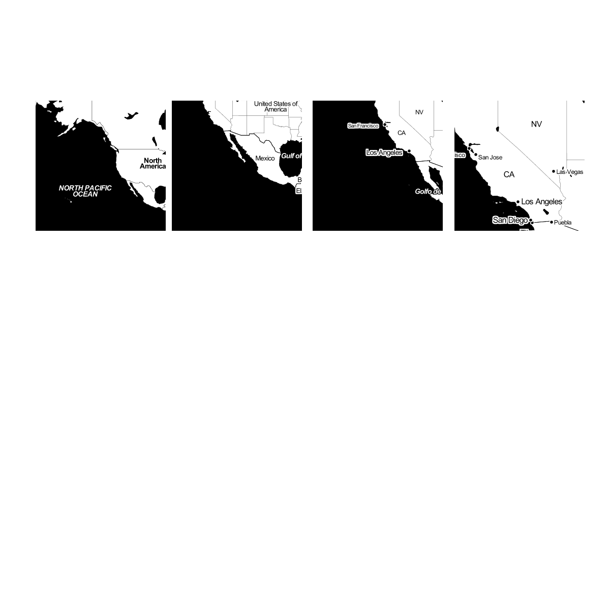
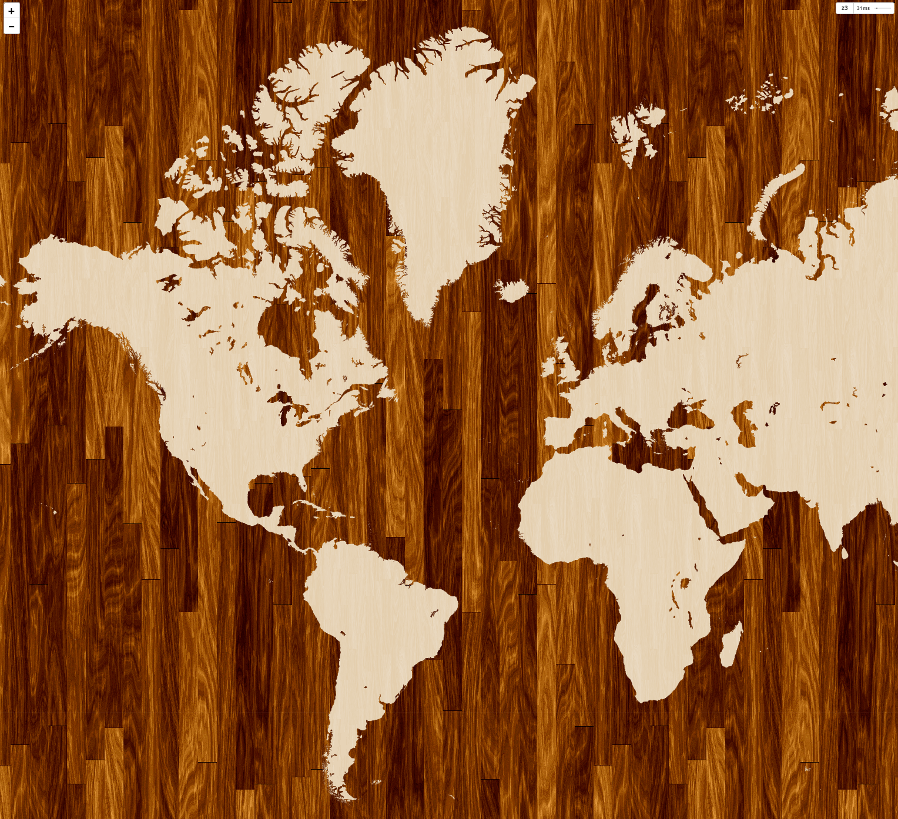

An Introduction to Web Mapping
You can view, comment, remix and edit on
github!Today we will be talking about the basic principles of web mapping.
And we will be including a little history, too.
We'll not going to talk a lot about Google, but will instead show you an open source Google-free stack
We're going to answer the question...
How is a web map different than a digital map?
Digital: involves a computer, but might not be accessible by the internet.
Digital maps are (usually) created by Geographical Information System (GIS).
A web map is a kind of digital map.
We're talking about web maps that you view in a browser
Making maps for mobile devices is evidently similar to web mapping but I won't be talking about it because I don't know much about it myself!
We also won't be talking about
digital globes like
Google EarthOk.
Time for the history lesson:
How did web maps come to be?

First there were digital maps published on the web using
ArcGIS.
ArcGIS is made by the company ESRI and it's mapping software used by institutions more than end-users
Although useful, GIS for the Web was not user friendly and maybe more importantly, it was not web developer friendly
In 1996, Mapquest launched its web service.
Online maps that could give directions! It was amazing!
But it was also slow to load :(
MapQuest required a full page refresh to scroll or zoom, and it was always aligned to specific map boundaries.
In 2005 Google Maps solved this problem by introducing the tile.
The tile 
A tile is just an image that is served up on the internet
All tiles are the same size - 256x256 pixels
Tiles can be road map, a satellite image, or anything else that's a
raster.
All these little tiles load
way faster than one big map.
Web maps load the tiles that you want on your screen and if the map is smart, it will pre-load tiles outside of the screen, along the top, bottom, left, and right.

This is why this kind of map is sometimes called a
slippy mapEach zoom level has its own set of tiles...
 Zoom level 0: one tile for the world.
Zoom level 0: one tile for the world.With each additional zoom level, the number of tiles increases exponentially.
 Zoom level 1: 4 tiles for the world.
Zoom level 1: 4 tiles for the world.Zoom level 2, 3, 4, 5
 Zoom level 13
Zoom level 13level 17
level 17 === 0.003 degrees == 1.193 m /pixel === 1:4,000 scale
Tiles are usually rendered in advance then stored in a cache
In order to understand how this works, let's break down the URL.
level 17
http://tile.openstreetmap.org/17/35303/48503.png -- this is the name of the tile server.
http://tile.openstreetmap.org/17/35303/48503.png -- this is the z value, or the zoom level.
http://tile.openstreetmap.org/17/35303/48503.png -- This is the x/y value, or the place in the grid where the tile lives.
This collection of raster tiles makes up what we call the map's base layer.
When we layer things like markers on top of them, we call those data layers or content layers or feature layers.
They are often vector layers (point, line, polygon). Sometimes you can interact with them (clicking to produce a popup, for example).
Data layers can be expressed in a variety of file types
GIS uses
shapefiles, but web mappers prefer
KML, or
GeoJSONGeoJSON is especially magical because it now can be displayed and tracked within GitHub
The City of Windsor's Open Data Catalogue provides geocoded data that can be used as data layers!!!
WHOA!
Wait, how do we get the data layers into the base layers of your map?
JavaScript libraries for Web Mapping!
What do these JavaScript libraries do? They grab the tiles, adds content layer, and handles interaction.
[Leaflet's] "most important contribution...
is its ability to treat map elements just like every other page element...While that capability may seem pedestrian, it’s quite powerful in practice. Tapping a marker on a map can trigger an event related to elements outside of the map, and vice versa. And once you begin playing with the power that offers, the traditional boundaries between the map and 'the rest of the page” vanish'.
So.
If I can get my Data Layers from The City of Windsor Open Data Catalogue...
Do I have to make my own custom base layer tiles?
You can add addtional style to you your map with
CartoCSSAnd you can even use a service like
TileMill to design your own tiles.
 Pretty!
Wait! I just noticed that there's no GeoJSON in the City of Windsor's Open Data Catalogue?! How can I make pretty web maps now?
You can convert a Shapefile to GeoJSON with
OGRE or you can easily create your own GeoJSON with
geojson.ioI think that's enough!
Here's a mapping challenge for you: put the open data from the City of Windsor's Open Data Catalogue on a map!
Thanks to:
The folks at
#maptime who shared the base layer of this presentation
The people at
OKFN.org who encourage Open Data Day and support Open Data work around the world
And to you, the map makers.
Presentation made with Tom MacWright's
bigHere be dragons.